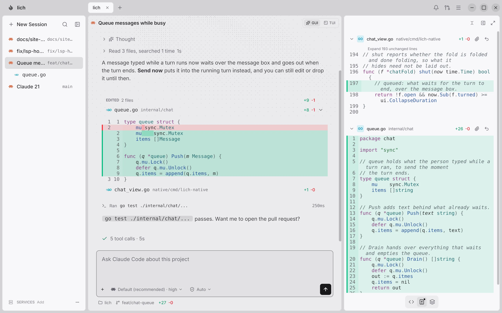
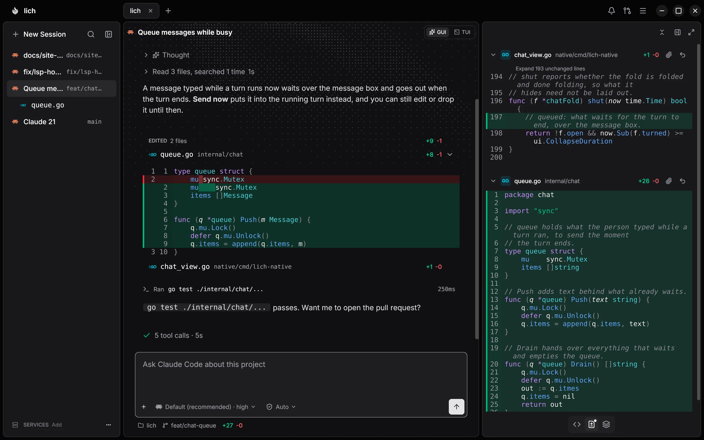
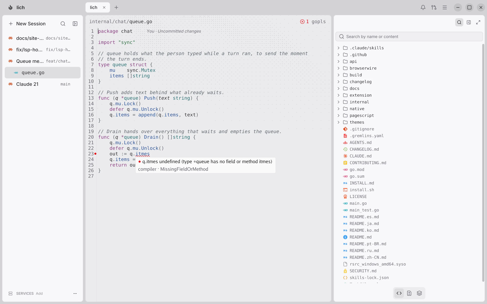
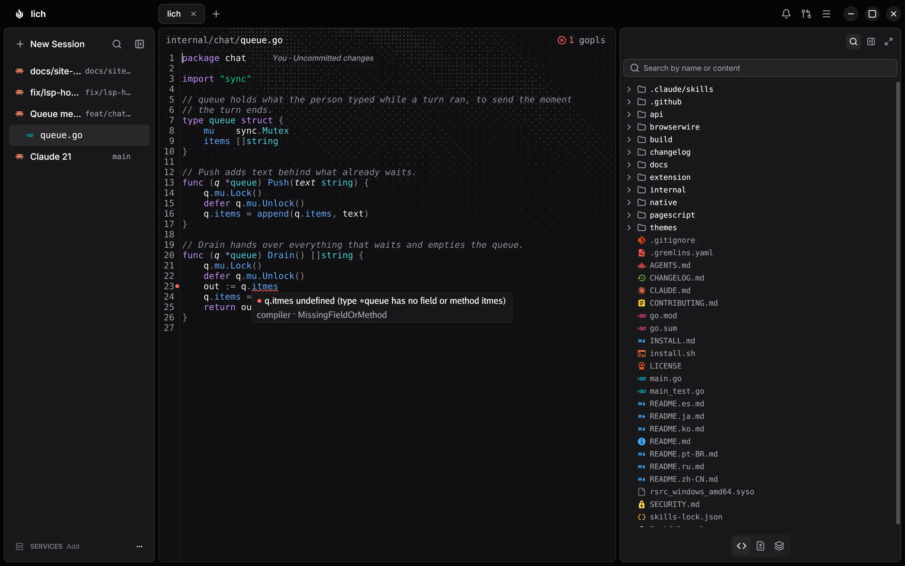
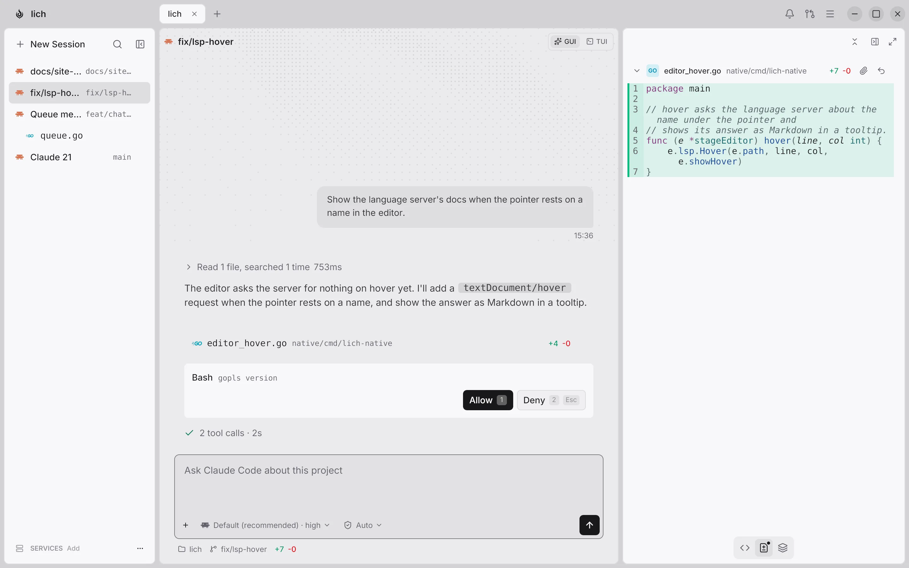
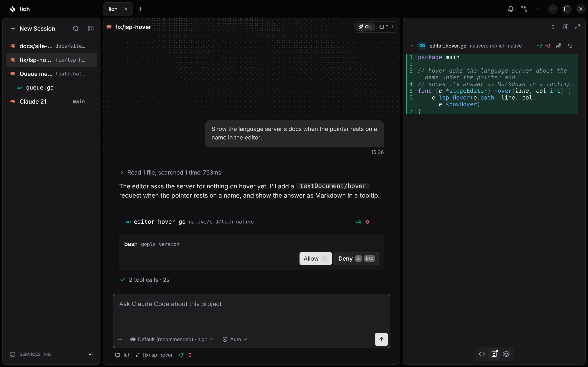
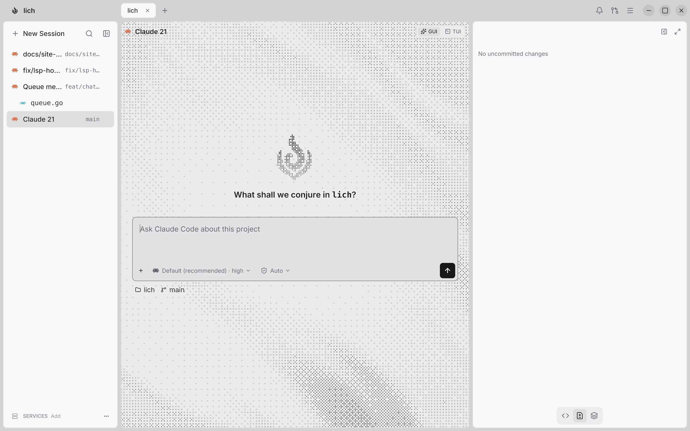
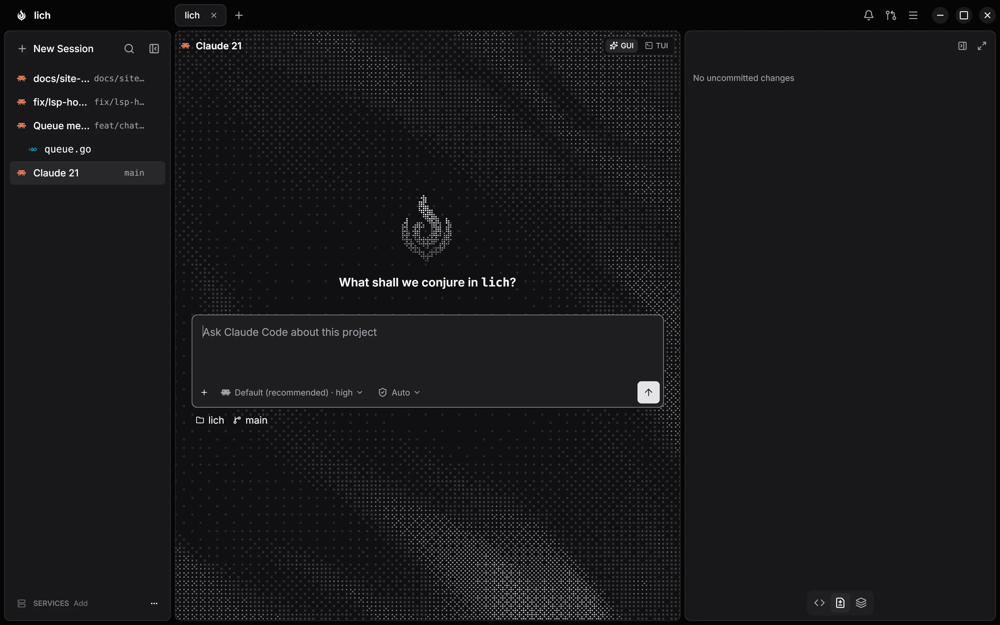
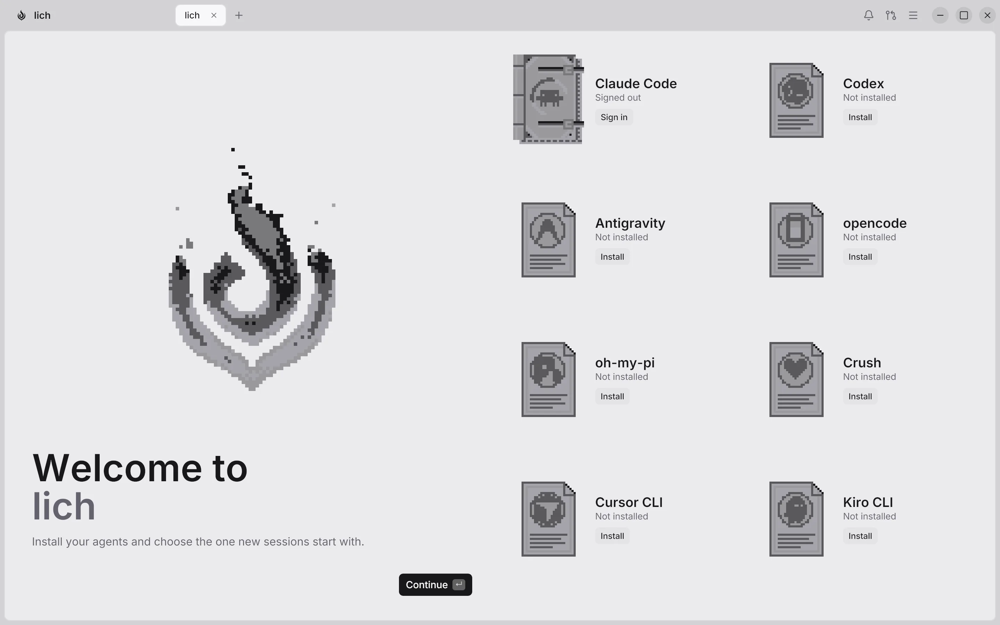
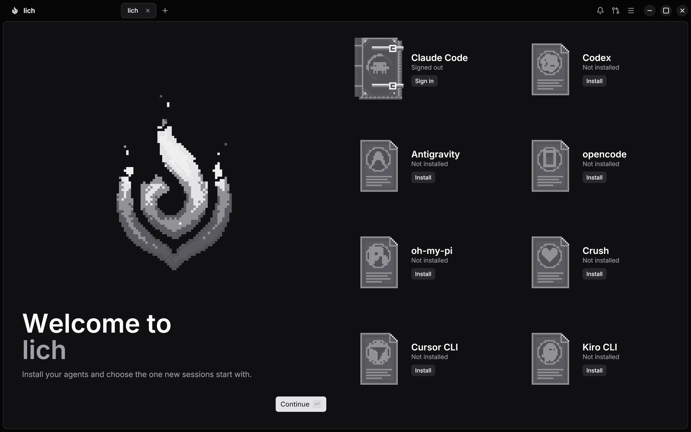

エージェント型開発環境
lich は、いま使っているコーディングエージェントのためのデスクトップウィンドウです。Claude Code、Codex、opencode ほか5種類を並べて、それぞれ専用の git ブランチで動かせます。チャットでもエージェント自身のターミナルでも対話でき、書かれたコードは言語を理解するエディタで直せます。プルリクエストのレビューとマージも、ウィンドウを離れずに行えます。
無料・オープンソース · Linux、macOS、Windows 対応 · すべてのインストール方法


チャットのセッション。ツール呼び出しは 1 行に折りたたまれ、編集は差分として開き、隣のドックで変更全体をレビューできます。


どのファイルもステージで開き、PATH 上の言語サーバー（ここでは gopls）からエラー、補完、ドキュメントが届きます。


許可を求めるエージェントはチャットで待ち、サイドバーのカードにも表示されます。キー 1 つで許可か拒否。


新しいチャットは専用のブランチで始まり、モデル・思考レベル・モードはメッセージ欄の下にあります。


初回起動時に、選んだエージェントをインストールし、それぞれのアカウントでサインインします。
機能
チャットでもターミナルでも
エージェントとチャットで対話できます。ツール呼び出しは折りたたまれ、編集は開いて見られる行として並びます。同じセッションをエージェント自身のターミナルに切り替えることもできます。
タスクごとにブランチ
各セッションは専用の git ワークツリーで作業するので、エージェント同士が互いのファイルに触れずに並行して動きます。
コードを理解するエディタ
PATH上の言語サーバーから、エラー、補完、ドキュメント、定義へのジャンプを提供します。Vim キーはあなた自身の Neovim が処理します。その場でレビュー
差分を読み、行にコメントを付けて、そのコメントを1つのプロンプトとしてエージェントに返せます。
プルリクエスト
GitHub のプルリクエストと GitLab のマージリクエストを、Pulls で確認、レビュー、マージできます。
エージェント用のブラウザ
セッションの横に、エージェントが操作するページを開きます。あなたはそこに描き込んだりメモを残したりでき、エージェントがそれを読みます。
連携するセッション
エージェントは lich のツールを通じて互いにタスクを渡し、自分自身をフォークし、結果を報告します。サブエージェントには専用のカードが付きます。
入力待ちがすぐわかる
エージェントがあなたを待つとセッションのリングがアンバーに変わり、どのセッションかをデスクトップ通知が知らせます。
レイアウト
セッションを並べると、その数とウィンドウの広さに合わせてグリッドが決まります。
サービス
開発サーバー、コンテナ、トンネルを一度保存すれば、lich がプロジェクトと一緒に起動し、動かし続けます。
プランの残りが見える
コンテキスト、プロンプトキャッシュ、費用、プランの残りを表示します。サインインするアカウントごとにプロファイルを使い分けられます。
どのセッションもすぐ見つかる
Ctrl+P で、名前や会話の内容からセッションを探せます。lich の外で始めた会話も再開できます。
セッションごとのサンドボックス
オプションです。新しいホームディレクトリを用意し、マシンのほかの部分は読み取り専用、書き込めるのはそのチェックアウトだけになります。
テーマ
カタログのテーマをウィンドウ全体で試してから決められます。自分で書くこともできます。
拡張機能
ほかにも
すべてのリリースは変更履歴にあります。
エージェント
lich はエージェントの CLI を配布されたままの形で動かします。PATH から見つけるか、ようこそ画面からインストールします。ログインもプランも設定も、これまでどおり各エージェントのものです。lich 自体にはアカウントも API キーもありません。
- Claude Code
claude - Codex
codex - Antigravity
agy - opencode
opencode - oh-my-pi
omp - Crush
crush - Cursor CLI
cursor-agent - Kiro CLI
kiro-cli
その他の CLI はターミナルセッションで動き、同じワークツリー、レビュー、プルリクエストをそのまま使えます。各エージェントの対応範囲はプロバイダー対応状況の表にあります。
ダウンロード
インストールしたら、プロジェクトを開いてエージェントを選ぶだけです。PATH に git が必要です。プルリクエストを使うには gh か glab も必要です。
curl -fsSL https://raw.githubusercontent.com/lichdotdev/lich/main/install.sh | sh
ディストリビューションに合った .deb、.rpm、.pkg.tar.zst を選び、checksums.txt で検証します。Arch なら yay -S lich-bin でも入ります。x86_64、glibc 2.34 以上と zenity が必要です。
brew install --cask lichdotdev/tap/lich
Homebrew でインストールします。新しいリリースは brew upgrade で更新できます。
scoop install https://github.com/lichdotdev/lich/releases/latest/download/lich.json
Scoop でインストールします。インストーラーも使え、こちらはその場で自動更新されます。
チェックサムの検証手順と、ほかのインストール方法はすべて INSTALL.md にあります。
lich について
lich は AGPL-3.0 で公開されている自由ソフトウェアです。テレメトリは送信せず、登録するアカウントもありません。Linux を第一に開発しており、macOS と Windows でも動きます。
lich で時間を節約できたなら、開発のスポンサーをご検討ください。
- バグの報告や機能のリクエストは Issue トラッカーへ。
- lich があえて省いていることとその理由は、既知の制限にあります。
- コマンドラインを使えば、スクリプトから操作できます。
- セキュリティの問題を見つけたら、まずセキュリティポリシーをお読みください。